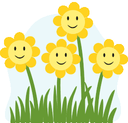

<section class="about">
    <div class="about-fellowship">
        <div class="sec-wrap">
            <h2 class="about-heading">About Us</h2>
            <div class="about-center">A group of motivated social workers collectively share ideas , help budding social
                workers
                to tailor their aspirations,providing enterprising platforms in such a way that they can be changemakers
                of
                tomorrow.
            </div>
            <button class="bro-btn">Download brochure</button>
        </div>
        <div class="fellowship">
            <h1 class="fellowship-heading">Upcoming Bench Fellowship program</h1>
            <div class="fellow-ai" [style.background-image]="'url(' + fellowAi + ')'">
                <div class="event-list">
                    <div class="event-items">
                        <div class="event" (click)="itemClick($event,'Abt')" [class.active]="about">
                            <span>About</span>
                        </div>
                        <div class="event" (click)="itemClick($event,'Obj')" [class.active]="objective">
                            <span>Objectives</span>
                        </div>
                        <div class="event" (click)="itemClick($event,'Cri')" [class.active]="criteria">
                            <span>Criteria</span>
                        </div>
                    </div>
                    <div class="event-description">
                        @if (about) {
                        <div class="evnt-des">
                            <p>Bench Fellowship is a part time fellowship designed for MSW students in Kerala. Its
                                core
                                aim
                                revolves around uncovering the finest qualities in young individuals and facilitating
                                their
                                engagement within their communities. Bench Fellowship serves as a window, which helps to
                                see
                                the
                                inner self of each student and open the creative intervention to
                                the life of human being. This initiative offers a platform for the development of four
                                crucial
                                aspects of life such as mental health, emotional intelligence, creativity, and social
                                interactions/life. This Fellowship program functions as a joint program with Anjappam
                                charitable
                                trust Pathanamthitta.
                            </p>
                        </div>
                        }
                        @if (objective) {
                        <div class="evnt-des">
                            <ul>
                                <li>To create a space conducive to sharing thoughts and feelings.</li>
                                <li>To improve the emotional well being of youth.</li>
                                <li>To improve self awareness, self esteem, self love, self confidence and leadership
                                    qualities.
                                </li>
                                <li>To provide opportunity to work for improving the life of children in backward
                                    communities.</li>
                                <li>To provide opportunities for the fellows to get involved in their community.</li>
                                <li>To get new skills, new friends, feel like they are making a difference.</li>
                            </ul>
                        </div>
                        }
                        @if (criteria) {
                        <div class="evnt-des">
                            <ul>
                                <li>This is a part-time fellowship programme.</li>
                                <li>Takes 40-60 days and concludes within 18 months.</li>
                                <li>Fellowship is availabe for 1st year MSW students (2024-2026)</li>
                                <li>From one department a maximum of 3-5 students can join (male & female).</li>
                            </ul>

                            <div class="criteria-point">N.B. Enrolments will start soon. Stay tuned for more!!</div>
                        </div>
                        }
                    </div>
                    <!-- <div class="wrapper">
                    
                </div> -->
                </div>
            </div>
        </div>
    </div>
    <!-- <div class="cards">
        <div class="card">
            <div class="front">
                <h3>Creative Space</h3>
                
            </div>
            <div class="back">
                <p>Bench provides a creative space for young individuals in India.</p>
            </div>
        </div>
        <div class="card">
            <div class="front">
                <h3>Enterprising Platforms</h3>
                
            </div>
            <div class="back">
                <p>Our primary focus is to provide different enterprising platforms for youths.</p>
            </div>
        </div>
        <div class="card">
            <div class="front">
                <h3>Positive Impact</h3>
                
            </div>
            <div class="back">
                <p>Youths discover themselves and set themselves up to bring positive impacts to their community.</p>
            </div>
        </div>
    </div> -->
</section>